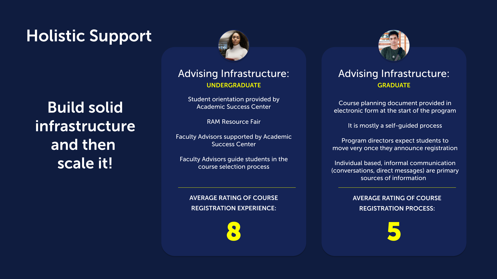
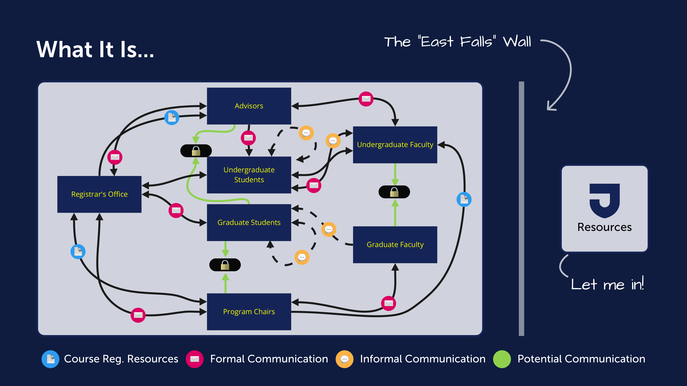
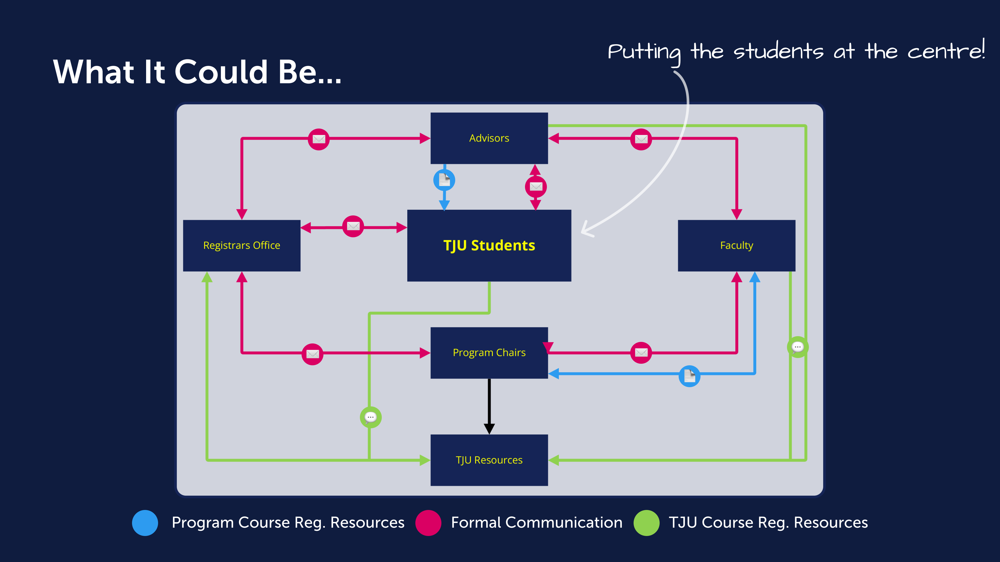
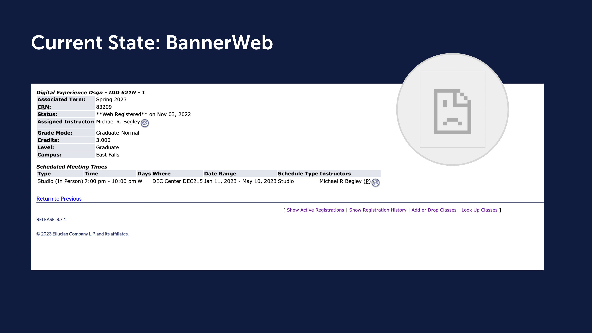
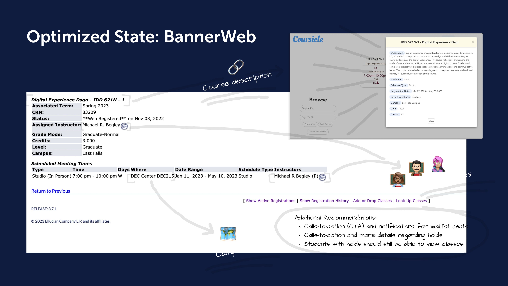

BannerWeb works.
Students don't.
A field research study into why course registration fails students at the exact moment they need clarity most — and what a better system could look like.
The system is functional.
The experience is broken.
BannerWeb allows students to search, add, and drop courses. Technically, it works. But in practice, students find it confusing, stressful, and completely disconnected from how they actually make decisions about their education.
This research project set out to understand why the experience feels broken — and to propose a direction that makes course registration feel less like a bureaucratic task and more like a supported academic decision.
One question guided everything.
After initial observation, the research question crystallised around a single reframe — not just what's wrong, but what a better system could actually feel like.
How might we improve TJU's course registration process to make it more intuitive, less burdensome, and genuinely supportive of academic decision-making?
Five questions.
One broken system.
Each objective was designed to uncover a different layer of the registration experience — from individual mental models to institutional failure points.
Three methods.
One broken system.
Research was conducted across three distinct approaches — capturing perspectives from institutional leadership, students in the field, and the university's own documentation.
.png)
The Pretzel For Your Thought event gave us access to students in an unguarded, natural context — not a lab, not a scheduled session. By meeting people where they already were, we heard perspectives that a formal interview would never surface. Most students hadn't consciously labelled registration as a problem. They'd normalised it. The event made those invisible frustrations visible.

Interviews with program heads, student advisors, and education committee members revealed a consistent tension: institutional stakeholders understood the system's limitations but felt constrained by legacy infrastructure and resource limitations. Advisors, in particular, described registration season as a period of damage control — fielding the same interface questions week after week, with no systemic fix in sight.
Background research into the TJU Academic Catalog, graduate course descriptions, and institutional correspondence helped frame the right questions for user interviews — ensuring the study could gather relevant and actionable insights rather than surface-level complaints.

University catalogues and advising documentation painted a picture of a system designed with good intentions but built for administrative efficiency — not student comprehension. Course codes, prerequisite logic, and section numbering were all structured around backend processes rather than how a student thinks when choosing a class.
The infrastructure gap between
undergrad and graduate.
Desk research into the university catalogue revealed a stark difference in advising support — undergraduate students benefit from structured, layered guidance, while graduate students are largely left to navigate registration alone.
Key implication: Graduate students encounter registration with far less institutional scaffolding — making every piece of friction in BannerWeb hit harder. Building holistic support means closing this infrastructure gap first, then scaling it.
Three findings that
changed the direction.
The most revealing moments weren't when users complained — they were when users shrugged. Every workaround had become invisible to them.
Three students.
Three breaking points.
These archetypes emerged directly from field research — real patterns from real sessions, not invented profiles.
Arrived with a handwritten list of course names from orientation — only to find BannerWeb requires CRN codes she's never heard of. Has no idea what half the fields mean or whether she qualifies for the courses she wants.
Understanding prerequisite logic. Can't tell if she's eligible for a course without emailing an advisor and waiting two days for a reply — by which point the section is already full.
Has registered five times. Built his own spreadsheet system to plan before touching BannerWeb — but still finds himself re-entering the same data from scratch each semester with no continuity.
Schedule conflicts. Has to manually cross-check every course time because BannerWeb surfaces no warnings — he only finds out about clashes after he tries to submit.
Registration week means 40+ emails before Monday morning — most aren't academic questions, they're interface questions. She spends the majority of her time explaining what a CRN number is.
Scaling her time. Every interface question she fields is time taken away from the actual academic guidance students need — and the system gives her no tools to reduce the volume.
From fragmented flow
to holistic system.
After synthesising field findings, the gap between what exists and what's needed became impossible to ignore.

The current BannerWeb experience is a walled system — resources exist on the other side but students can't access them without navigating a maze of codes, locked pages, and prerequisite barriers. The "East Falls Wall" became a recurring metaphor in research: students know help exists, but the system blocks them from reaching it without an advisor's intervention.

The optimised state keeps BannerWeb's core infrastructure but layers in everything students actually need — course descriptions surfaced inline via Coursicle integration, faculty profiles visible at the point of selection, a campus map for room context, and proactive CTAs for waitlists and holds. Students with holds can still browse — they're no longer locked out of information.
Two systemic problems.
Two design directions.
Each finding pointed at a structural failure — not a user error. The proposed directions address root causes, not symptoms.
What exists today.
What we're proposing.
The proposed changes don't require rebuilding BannerWeb from scratch — they layer the information students actually need on top of existing infrastructure, at the exact moments they need it most.

The current course detail page surfaces only the bare minimum — a CRN, a time slot, an instructor name. No course description. No way to understand what you're signing up for without leaving BannerWeb entirely. The broken document icon where course info should be is the most honest summary of the problem.

The proposed state layers the missing context directly into BannerWeb — a Coursicle integration surfaces the full course description inline, faculty profile avatars link to instructor pages, a campus map resolves room codes into real locations, and students with holds can still browse and plan even if they can't yet register.
The best research reveals what
users have accepted as normal.
Every student who opened a spreadsheet alongside BannerWeb had stopped seeing it as a problem. My job as a researcher was to see it for them, name it, and make the case that it didn't have to be that way.